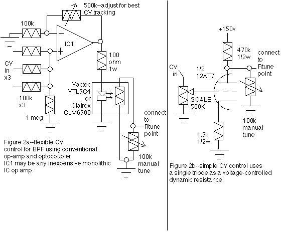

|
Owner, METASONIX, Redwood City, California USA e-mail: synth@metasonix.com The Basic VCF Since you are reading this article, we have to assume that you read the previous articles dealing with the all-tube VCA and the VCO. Inevitably, people want to pursue subtractive synthesis. Equally inevitable, they will expect the same old paradigms and sond effects, just translated into the tube domain. So, I've worked up a very simple (too simple, according to the uninformed) bandpass filter which can be voltage controlled. In this case, we have to start literally from scratch. The very idea of a voltage-tunable filter was alien until Moog and Buchla came along. Pioneer work, such as that of Herbert Eimert at Cologne's Electronic Music Studio or Louis and Bebe Barron on the soundtrack of the film FORBIDDEN PLANET, involved some electronic filters. These commercial bandpass filters were usually large rack-mounted devices, tuned only with a manual knob. And the RCA Mark I and Mark II synthesizers at Columbia University had automated filter controls; but SWEEPING the filter DURING the note was difficult. One had to revert to twsting a knob, while the tape ran. So much for the automatic age. Indeed, when the first Moog instruments appeared, the users discovered the weird novelty of the "woow" effect of a swept BPF. It was radical, and became the stereotype of synthesized music (which it still is today). Figure 1 shows the simplest circuit I could devise that can give a good, deep BPF effect. Some of you will recognize the time-honored "twin-T" circuit, such as seen in the old Paia 2720 filter module. Obviously the 2720 was carrying the low-cost design bit to the extreme- it used a single NPN transistor in a typical common-emitter setup. The Q of the filter was varied by a pot in series with the bypass capacitor across the emitter resistor, and Rtune was implemented with a couple of cheap 1N914-type diodes and some 330k resistors-the DC voltage that forward-biased the diodes caused their dynamic resistance to change, thus making the filter center frequency Fc change. We have taken out those semiconductors and hurled them away from us as far as possible. Instead, we use the EF86 pentode. And we can keep the bypass capacitor on the cathode resistor; all we need to do is vary the gain of the stage to get adjustable Q. That's easy-just vary the screen grid voltage! As shown, the usable Q range occurs from a screen voltage of 10v to approximately 20v, whereupon the filter will self-resonate and oscillate (as people expect it to). And as with other VCFs, we can then use this circuit as another VCO. If the frequency range is incorrect, the 0.01 uF capacitors can be scaled as needed. The chart shows how the Fc of this particular circuit varies with the tuning resistor Rtune. We can use a pot, of course; or we can use the old 2720 variable resistor, with its notorious temperature instabilities. Or we can vary Fc with the circuits in Figure 2. The most common circuit, seen in 2a, is the typical op-amp summer with adjustable gain, driving a Vactec or Clairex LED-CdS cell optocoupler. This circuit can give fairly good linear Fc sweep if the feedback resistor is properly adjusted. (It is difficult to make this exactly track the keyboard CV. But then, this is one of the dirty little secrets of the early analog-synth business- most of the prepatched monophonic synths of the 1970s could not make THEIR filters track the VCOs very well, anyway!) Finally, if the passband of this circuit is too broad even with high Q settings, two or more identical designs may be cascaded. And for those of you who are hardcore, Figure 2b is a little suggestion for doing it all-tube. We are using the triode as a voltage-variable dynamic resistance. Although there is a DC voltage on this point, which varies with the CV, another dirty little secret is that many classic synth filters (such as the 2720 or any of the much-venerated Moog ladder filters) had the same problem. In short, change the filter tuning CV quickly, and you get CV feedthrough in the filter output. Usually this is not a major issue, especially given the current worship accorded to the slightly-less-primitive Moog ladder. The older filter design, shown at the Synthfool web site, is an adequate bandpass or lowpass unit. I say "adequate" because of its two major weaknesses. First, the 1.5k resistor on the output is necessary to load down the output signal, to keep the filter from going into "motorboat" oscillations. Second, this is not a "sharp" sounding filter, and many people who have heard it have consistently complained that it wasn't "what they expected". Although all agree it can be used as a "formant" filter, the expectation is for the familiar sound effects. Sometimes I wonder if these same people dislike FM or other synthesis paradigms because they "don't sound like they should." In my experience, users are looking to ADD harmonic content, not remove it. Anyway, these filters are the simplest that I have been able to think up and prototype. For those who insist upon implementing the standard op-amp filter designs, such as the state-variable, these capacitively-coupled circuits are not sufficient. The only easy way to get there with tubes is by implementing op amps with tubes. This is an advanced subject, and can get complex and expensive in a hurry. For a basic op-amp design using only two tubes, the classic Philbrick K2W can't be beat. See my article in the 3/92 issue of GLASS AUDIO magazine. Bear in mind that a) each tube op amp will require offset nulling, b) the electrical performance of the K2W design is quite limited, and c) it is possible to make these op-amps voltage-controllable by using a VC current source in the differential input circuit. (GLASS AUDIO back issues are available from Audio Amateur Corporation, PO Box 176, Peterborough NH 03458, (603) 924-9464.) If you don't mind a minimum of 9 tubes to implement a state-variable system, this would be the ultimate. Schematics  About the Author Eric Barbour holds a BSEE degree from Northern Arizona University. He has been a regular contributor with GLASS AUDIO magazine since 1991, staff editor of VACUUM TUBE VALLEY magazine since its founding in 1995, and has written articles for many other music and audiophile publications.
Audio Synthesis via Vacuum Tubes Home
A note to readers: this circuitry is intended for the more advanced builder. Because high voltages are used, a shock hazard exists. We do NOT recommend that the novice DIY musician try to construct this synthesizer. Some experience with tube electronics is highly recommended.
|